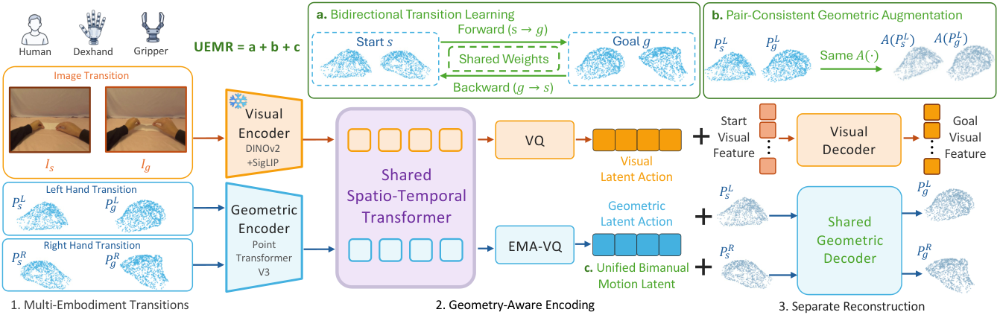
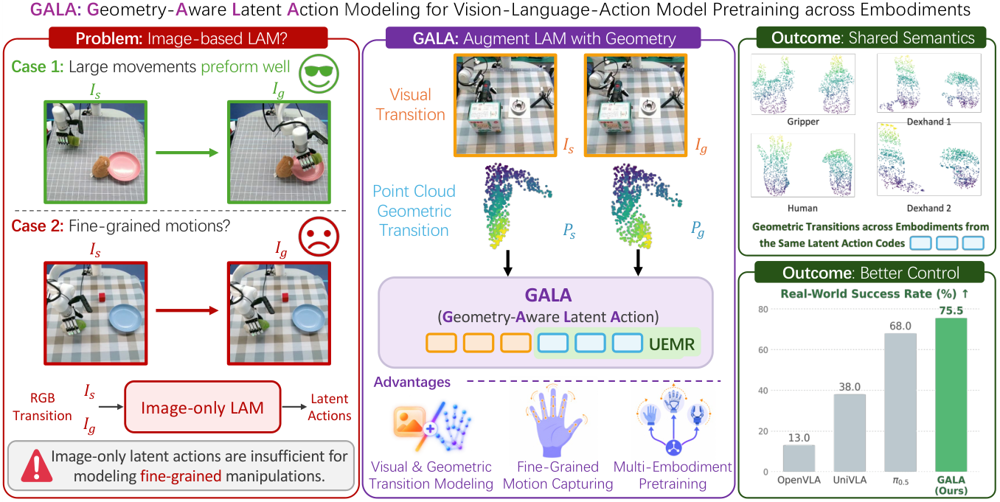

사람 손·로봇 손·그리퍼 영상에서 latent action(행동 라벨 없이 두 프레임 사이 변화만 보고 추론한 압축된 "행동 코드")을 뽑을 때, 이미지만 보면 손가락 수준의 미세한 움직임을 놓친다. GALA는 손/집게 모양을 3D 점구름(point cloud)으로 바꿔 그 변화까지 코드로 만든다. 여기에 모양 차이에 휘둘리지 않게 하는 3가지 장치(UEMR)를 더했다. 이 코드로 VLA(이미지+언어를 받아 로봇 행동을 내는 모델)를 사전학습하면, 양손 휴머노이드 시뮬레이션 RoboCasa-GR1 24개 태스크 평균 성공률 68.3%(이전 최고 공개 결과 UniT 66.8%), 실제 12자유도 로봇 손 4개 태스크 평균 75.5%(HARP-VLA 71.5%, π0.5 68.0%)를 얻는다.
VLA 모델은 여러 로봇의 데이터를 많이 모을수록 좋아진다. 하지만 로봇 시연 데이터는 비싸다. 그래서 사람이 손으로 물건을 다루는 영상이 좋은 보조 데이터가 된다.
문제는 행동 공간(action space)이 서로 다르다는 점이다. 사람 손, 5손가락 로봇 손, 2손가락 집게(parallel-jaw gripper)는 관절 수(자유도, DoF)와 제어 방식이 다 다르다. 그래서 행동 값을 그대로 섞어 학습하기 어렵다. 이를 맞추려면 리타게팅(retargeting, 한 몸체의 동작을 다른 몸체 관절로 옮겨 적는 변환)이 필요하다.
대안이 latent action model(LAM)이다. 영상의 두 프레임을 보고 "무슨 행동이 일어났는지"를 이산 코드로 압축한다. 행동 라벨이 없는 사람 영상에도 쓸 수 있다. 그러나 기존 LAM은 RGB 이미지 변화만 본다. 그래서 손이 "어디로" 움직였는지는 잡지만, 손가락이 "어떻게" 쥐었는지는 놓친다. 움직임이 작거나, 가려지거나, 시점이 바뀌면 더 심하다.
손 모양을 3D 점구름으로 넣으면 미세 동작은 잡힌다. 하지만 새 문제가 생긴다. 점구름은 "사람 손 모양"이나 "좌표계 위치" 같은 몸체 고유 정보를 담는다. 그러면 같은 "쥐기" 동작도 몸체마다 다른 코드가 되어, 몸체 간(cross-embodiment) 공유가 깨진다. 이 논문은 이 두 문제를 함께 푼다.
전체는 2단계다. 1단계: 영상과 점구름으로 latent action 모델을 학습한다. 2단계: 이 모델을 얼리고(freeze), 그 코드를 정답 삼아 VLA를 공동 학습(co-training)한다.
몸체 e, 손 방향 h(왼손 L/오른손 R), 시각 t의 말단장치 모양을 순서 없는 3D 점 N=1024개의 집합 Pte,h로 표현한다. 모든 점구름은 손목(또는 루트 링크) 중심 좌표계에서, 공통 축 규칙으로 표현된다. 몸체 간 점·관절·메시 연결 구조의 대응은 필요 없다.
입력은 시작 시점 s와 목표 시점 g의 RGB 이미지 (Is, Ig), 언어 지시 ℓ, 양손 점구름 쌍이다. 시작·목표 점구름은 같은 중심·스케일로 정규화한다. 없는 손은 유효 마스크(validity mask)로 제외한다.
이미지는 얼린 DINOv2·SigLIP(사전학습 이미지 인코더)로, 점구름은 얼린 Point Transformer V3(PTv3, 점구름 전용 트랜스포머)로 특징을 뽑는다. 이 특징들을 언어와 함께 공유 시공간 트랜스포머에 넣는다. 출력은 두 종류다: 시각 latent 토큰, 그리고 양손 3D 변화를 담은 기하 latent 토큰 ZG = {zjG} (j=1…Np, Np는 기하 코드 개수).
각 기하 토큰은 벡터 양자화(VQ, 연속 벡터를 코드북의 가장 가까운 코드로 바꾸는 것)로 이산화한다. 말로 하면 "코드북 KG개 코드 중 zjG와 거리가 가장 가까운 코드 ek를 고른다"이다: kj = argmink ‖zjG − ek‖², qjG = ekj. 코드북은 EMA-VQ(코드를 지수이동평균으로 갱신하는 안정적 VQ 방식)로 학습한다. 인코더·코드북은 사람 손·로봇 손·집게 모두가 공유한다.
기하 토큰은 왼손·오른손을 따로 받지 않고, 구간 전체의 양손 변화를 함께 표현한다. 한 팔 집게 데이터는 같은 점구름을 양쪽 입력에 복제한다.
복원은 "같은 코드 + 각 손의 시작 모양 → 각 손의 목표 모양"으로 한다: P̂gR = DG(PsR, Q(ZG)), 왼손도 동일. 여기서 DG는 공유 기하 디코더, Q는 양자화, P̂g는 예측한 목표 점구름이다. 손실은 Chamfer Distance(CD, 두 점구름에서 각 점과 상대편 최근접 점의 거리 평균)이다: LG-rec = mR·CD(P̂gR, PgR) + mL·CD(P̂gL, PgL). mR, mL은 해당 손이 보이는지 나타내는 마스크다.
핵심은 디코더에 시작 모양을 따로 주는 것이다. 몸체 고유 모양은 시작 점구름이 이미 알려주므로, 코드는 "변화"만 담으면 된다.
각 시작·목표 점구름 쌍에 같은 랜덤 3D 변환 A(P) = a·R·P + t를 적용한다. a는 스케일, R은 회전, t는 평행이동이다. 데이터셋마다 다른 좌표 관례에 기대는 지름길(shortcut)을 막는다.
정방향(s→g)으로 코드 ZfG를 뽑아 목표를 복원하고, 역방향(g→s)으로 ZbG를 뽑아 시작을 복원한다. 두 방향은 인코더·코드북·디코더를 공유한다. 두 코드 사이에 명시적 관계(예: 반대 부호)는 강제하지 않는다.
한 방향의 손실은 "이미지 복원 + 이미지 VQ 코드북/커밋 손실 + λG×점구름 복원 + β·λG×점구름 커밋 손실"이다. 커밋 손실(commitment loss)은 인코더 출력이 선택된 코드에서 멀어지지 않게 하는 항이다. β, λG는 가중치다. 최종 1단계 손실은 정방향+역방향의 합 LLAM = Lforward + Lbackward이다.
정책은 GR00T(NVIDIA의 휴머노이드용 VLA) 구조를 따른다. 비전-언어 백본(VLM)과 flow matching 행동 전문가(노이즈에서 출발해 실제 행동 궤적으로 가는 속도장을 학습하는 생성 방식)로 이뤄진다. 출력은 H스텝 행동 묶음(action chunk) At = [at, …, at+H−1]이다.
flow matching 손실을 말로 풀면: "깨끗한 행동 At와 가우시안 노이즈 ε를 비율 τ로 섞은 Atτ = τAt + (1−τ)ε를 주고, 모델이 노이즈→행동 방향 (At − ε)을 맞히게 한다"이다. 즉 Laction = E‖Vθ,e(Atτ | xt, st, τ) − (At − ε)‖². xt는 VLM 문맥, st는 현재 로봇 상태, τ는 0~1 균등분포 시간이다. 전체 손실은 LVLA = Laction + λlatent·Llatent.
비교 대상의 정체를 먼저 정리한다.
Probing이란 표현을 얼리고 작은 MLP만 붙여, 그 표현에 원하는 정보가 남아 있는지 재는 평가다. 여기서 MLP는 (현재 로봇 상태 + 시각 latent + 각 방법의 기하 latent)를 받아 시작→목표 사이 말단 이동량 Δp(cm), 손목 회전 ΔR(도), 손가락/집게 관절 변화 Δqfinger(도)를 예측한다. XHand 데이터 held-out 테스트셋, 시드 3개 평균. 낮을수록 좋다.
| 방법 | 위치 오차(cm) ↓ | 회전 오차(°) ↓ | 손가락 오차(°) ↓ |
|---|---|---|---|
| METIS | 6.162 | 8.520 | 14.328 |
| Native Kinematics | 5.879 | 8.098 | 7.768 |
| OPFA | 6.102 | 8.260 | 7.707 |
| GALA w/o PC | 6.790 | 8.567 | 15.113 |
| GALA | 5.359 | 7.898 | 7.585 |
점구름을 빼면(w/o PC) 손가락 오차가 7.585°→15.113°로 두 배가 된다. 이미지 전용 코드가 손가락 정보를 거의 못 담는다는 핵심 주장의 근거. 관절값을 직접 쓴 Native Kinematics보다도 GALA가 낫다.
사람 손, 집게, 로봇 손 2종의 영상에서 잡기(grasp)·유지(hold)·놓기(release) 구간을 라벨링했다. 한 몸체의 구간(query)으로 다른 몸체의 구간들을 코사인 유사도로 검색한다. 같은 동작 라벨이면 정답이다. R@1은 1위 결과가 정답인 비율, P@5는 상위 5개 중 정답 비율, mAP는 전체 순위 품질이다. 동작 3종이므로 무작위 수준은 약 33%다.
| 방법 | R@1 ↑ | P@5 ↑ | mAP ↑ |
|---|---|---|---|
| 사람+로봇 전체 트랙 | |||
| METIS | 33.26 | 33.29 | 37.21 |
| GALA w/o PC | 33.37 | 33.37 | 36.38 |
| GALA w/o UEMR | 38.69 | 40.31 | 48.15 |
| GALA | 45.67 | 44.57 | 49.49 |
| 로봇 전용 트랙 | |||
| METIS | 33.30 | 33.30 | 36.10 |
| Native Kinematics | 39.31 | 35.46 | 41.94 |
| OPFA | 41.18 | 36.83 | 43.03 |
| GALA w/o PC | 33.38 | 33.38 | 36.41 |
| GALA w/o UEMR | 33.83 | 38.54 | 43.11 |
| GALA | 46.91 | 41.74 | 46.95 |
METIS와 이미지 전용(w/o PC)은 R@1이 약 33%로 사실상 무작위 수준. 로봇 전용 트랙에서 UEMR을 빼면 R@1이 46.91→33.83으로 무작위 수준까지 떨어진다. 점구름만 넣어서는 몸체 간 공유 의미가 생기지 않는다는 뜻.
RoboCasa GR-1 Tabletop: 양손 다지 손을 가진 GR-1 휴머노이드의 24개 탁상 태스크(물건을 서랍·전자레인지·찬장에 넣고 닫기, 도마·접시·쟁반에서 새 물체를 옮기기 등). 이 실험은 GR-1 데이터만 쓰고, VLA 구조·데이터·배치·스텝을 모두 같게 한 뒤 latent action 모델만 바꾼다.
| LAM 방법 | 24태스크 평균 성공률(%) ↑ |
|---|---|
| UniVLA | 48.0 |
| METIS | 43.8 |
| Native Kinematics | 51.8 |
| OPFA | 53.5 |
| GALA w/o PC | 50.9 |
| GALA w/o UEMR | 54.4 |
| GALA | 55.7 |
이번엔 Fourier 손·XHand·사람 손·Robotiq 집게 데이터를 모두 섞어 VLA를 사전학습하고, 같은 GR-1 24개 태스크로 평가한다. "GR-1 단독 대비"는 표 III의 GR-1 전용 학습 결과보다 얼마나 올랐는지다.
| 방법 | 평균 성공률(%) ↑ | GR-1 단독 대비 ↑ |
|---|---|---|
| FLARE | 55.0 | — |
| DiT4DiT | 56.7 | — |
| JoyAI-RA | 63.2 | — |
| UniT | 66.8 | — |
| UniVLA (동일 다중 몸체 설정) | 53.6 | +5.6 |
| GALA w/o UEMR (동일 설정) | 58.6 | +4.2 |
| GALA | 68.3 | +12.6 |
UEMR 없이 몸체를 섞으면 이득이 +4.2에 그친다. UEMR이 있으면 +12.6. 다른 몸체 데이터를 "쓸모 있게" 만드는 것이 UEMR이라는 주장의 근거.
4개 태스크: Pick(물체를 집어 목표 위치에 놓기), Push(상자를 지정 영역으로 밀기), Press(버튼 누르기, 정밀한 손가락 위치·접촉 필요), Flip(컵 뒤집기, 접촉과 방향 전환 필요). 모든 방법은 같은 양의 실로봇 데이터를 쓰고 백본만 다르다. 태스크당 50회 시도.
| 방법 | Pick | Push | Press | Flip | 평균 |
|---|---|---|---|---|---|
| OpenVLA | 0 | 24 | 18 | 10 | 13.0 |
| UniVLA | 38 | 62 | 32 | 20 | 38.0 |
| OpenVLA-OFT | 52 | 72 | 54 | 42 | 55.0 |
| π0 | 56 | 72 | 56 | 34 | 54.5 |
| π0.5 | 72 | 80 | 68 | 52 | 68.0 |
| HARP-VLA | 72 | 82 | 74 | 58 | 71.5 |
| GALA w/o UEMR | 74 | 78 | 72 | 50 | 68.5 |
| GALA | 80 | 82 | 78 | 62 | 75.5 |
평균 75.5%로 HARP-VLA보다 4.0p, π0.5보다 7.5p 높다. 격차는 손가락 정밀도가 필요한 Flip(62 vs π0.5 52)·Press(78 vs 68)에서 크다.
별도 ablation(구성 요소를 하나씩 빼며 기여도를 재는 실험) 표 대신, 모든 실험에 "w/o PC", "w/o UEMR" 변형이 함께 들어 있다.


아직 추가 질문이 없습니다. 이 논문에 대해 더 궁금한 점을 물어보시면 답변을 여기에 정리해 추가합니다.